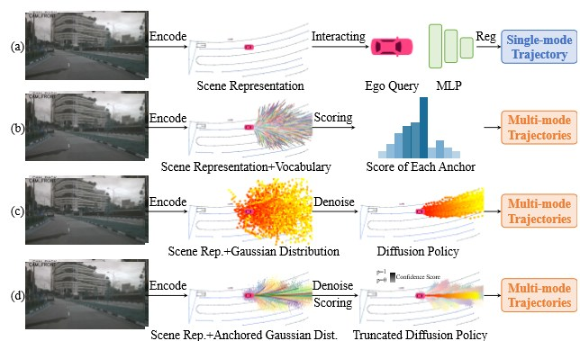
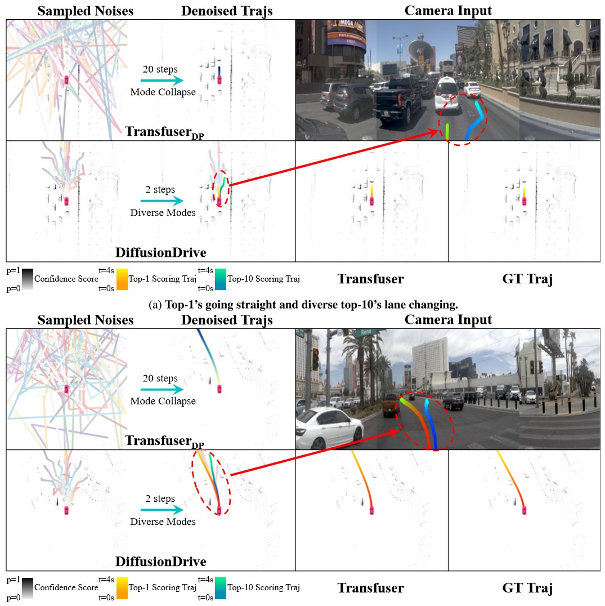
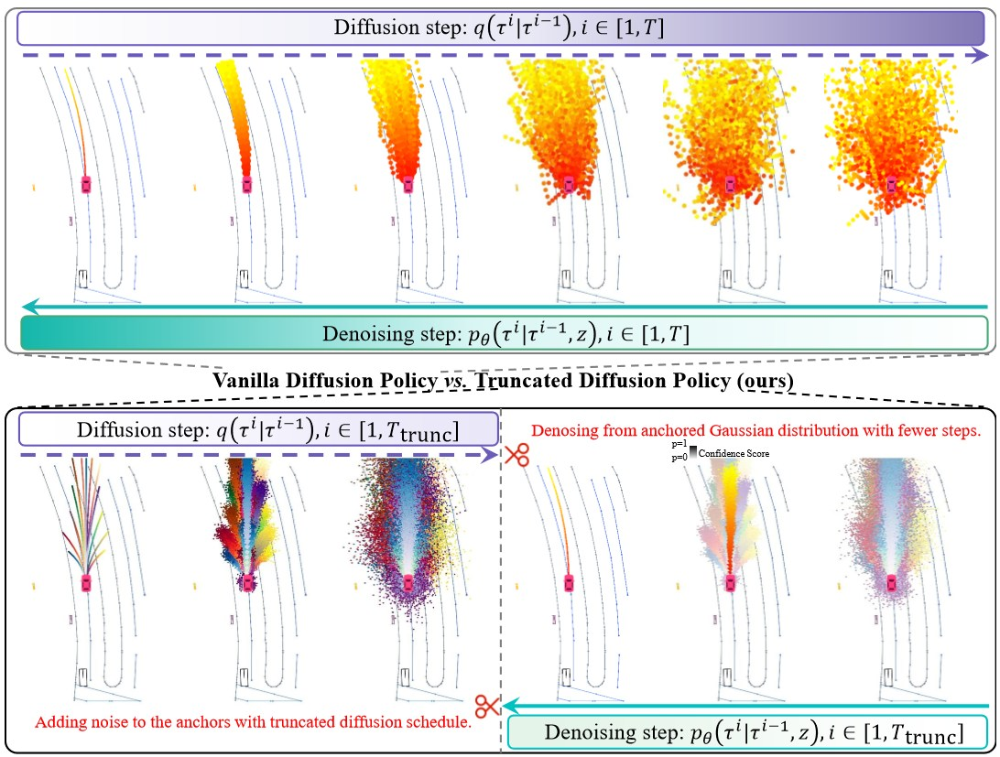
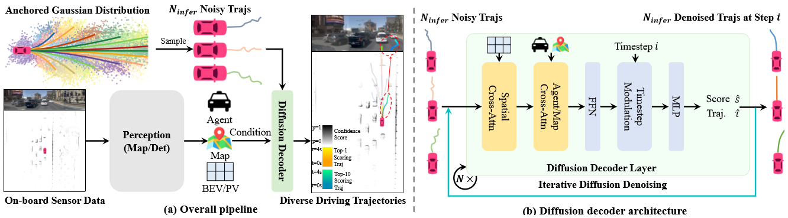
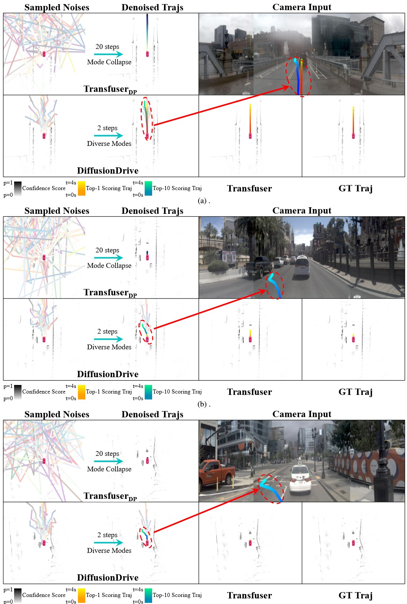
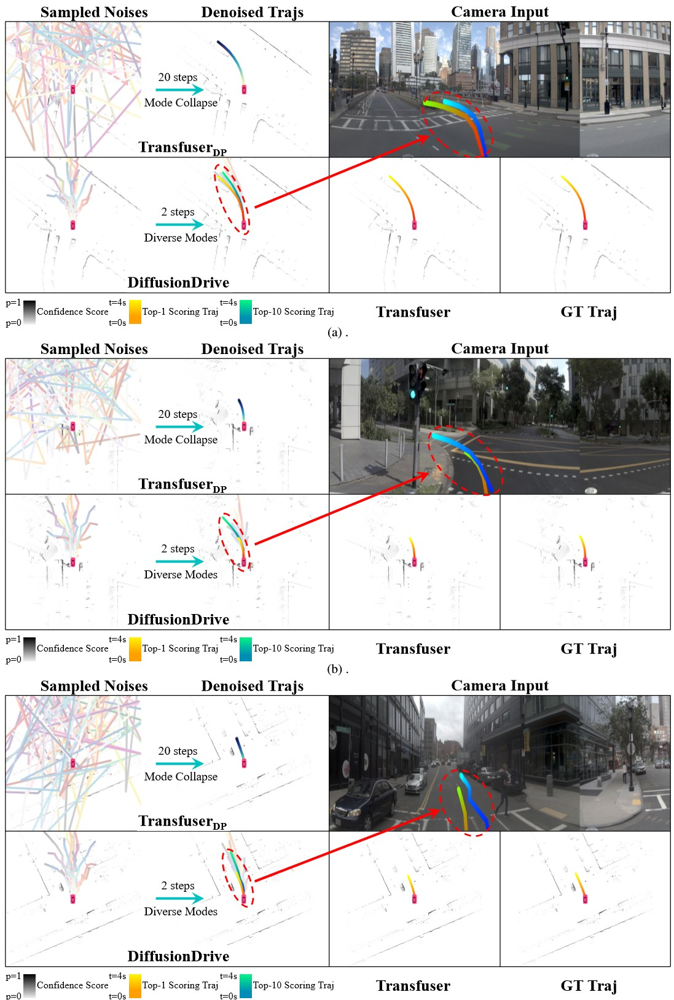
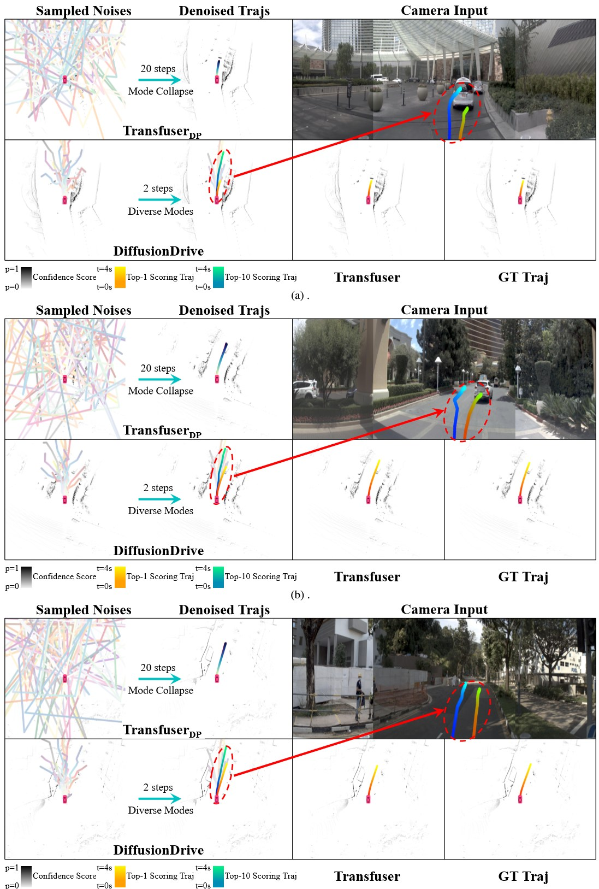

Bencheng Liao1,2,◇、Shaoyu Chen2,3、Haoran Yin3、Bo Jiang2,◇、Cheng Wang1,2,◇、Sixu Yan2、Xinbang Zhang3、Xiangyu Li3、Ying Zhang3、Qian Zhang3、Xinggang Wang2,✉
1 Institute of Artificial Intelligence, Huazhong University of Science & Technology
2 School of EIC, Huazhong University of Science & Technology
3 Horizon Robotics
コード・モデル・デモ：hustvl/DiffusionDrive
arXiv:2411.15139v3 [cs.CV]、2025年4月10日
◇ Horizon Robotics のインターン。✉ 責任著者：Xinggang Wang（xgwang@hust.edu.cn）。
翻訳について：原文 PDF は
33_DiffusionDrive_2411.15139.pdf（全 15 ページ）。本文、図の説明、図中ラベル、表、脚注、付録を訳出し、論文タイトルと参考文献は原文のまま掲載。図は原図を掲載し、英語ラベルの日本語訳を併記した。数式・数値・引用番号・コードの識別子は原文を維持。原文の記述に関する補足は「訳注」と明示し、本文と区別している。
近年、拡散モデルはロボットの方策学習のための強力な生成手法として台頭しており、マルチモードの行動分布をモデル化できる。その能力をエンドツーエンド自動運転に活用することは有望な方向性である。しかし、ロボット向け拡散方策における多数のノイズ除去ステップと、交通シーンのより動的でオープンワールドな性質は、多様な運転行動をリアルタイムの速度で生成するうえで大きな課題となる。これらの課題に対処するため、我々は、事前のマルチモードアンカーを組み込み、拡散スケジュールを打ち切る新しい切り詰め拡散方策（truncated diffusion policy）を提案する。これにより、モデルはアンカー付きガウス分布からマルチモードの運転行動分布へのノイズ除去を学習できる。さらに、条件となるシーン文脈との相互作用を強化するため、効率的なカスケード拡散デコーダを設計する。提案モデル DiffusionDrive は、素朴な拡散方策と比べてノイズ除去ステップを 10 分の 1 に削減し、わずか 2 ステップで優れた多様性と品質を実現する。計画指向の NAVSIM データセットにおいて、条件をそろえた ResNet-34 バックボーンを用い、DiffusionDrive は特別な工夫なしに 88.1 PDMS を達成して新記録を樹立し、しかも NVIDIA 4090 上で 45 FPS のリアルタイム速度で動作する。困難なシナリオにおける定性的結果からも、DiffusionDrive が多様でもっともらしい運転行動を頑健に生成できることが確認される。
脚注：入力データを形容する「multimodal（マルチモーダル）」という用語と区別するため、本論文では多様な計画上の意思決定を指すのに「multi-mode（マルチモード）」を用いる。

図1：異なるエンドツーエンドパラダイムの比較。（a）単一モード回帰［7, 16, 20］。（b）語彙（vocabulary）からのサンプリング［3, 25］。（c）素朴な拡散方策［6, 19］。（d）提案する切り詰め拡散方策。
図中ラベル：Encode＝符号化、Scene Representation＝シーン表現、Interacting＝相互作用、Ego Query＝自車クエリ、Reg＝回帰、Single-mode Trajectory＝単一モード軌道、Scene Representation+Vocabulary＝シーン表現＋語彙、Scoring＝スコアリング、Score of Each Anchor＝各アンカーのスコア、Multi-mode Trajectories＝マルチモード軌道、Scene Rep.+Gaussian Distribution＝シーン表現＋ガウス分布、Denoise＝ノイズ除去、Diffusion Policy＝拡散方策、Scene Rep.+Anchored Gaussian Dist.＝シーン表現＋アンカー付きガウス分布、Truncated Diffusion Policy＝切り詰め拡散方策、Confidence Score＝信頼度スコア
エンドツーエンド自動運転は、知覚モデル（検出［4, 17, 24, 42］、追跡［54–56］、オンライン地図作成［27, 28, 32］など）の進歩により、近年大きな注目を集めている。これは生のセンサ入力から運転方策を直接学習するものである。このデータ駆動型のアプローチは、複雑な実世界の運転環境への汎化に苦労することの多い従来のルールベースの動作計画に代わる、スケーラブルで頑健な選択肢を提供する。
データから効果的に学習するため、主流のエンドツーエンドプランナ（たとえば Transfuser［7］、UniAD［16］、VAD［20］）は、図1a に示すように、通常は自車クエリ（ego-query）から単一モードの軌道を回帰する。しかし、このパラダイムは運転行動に内在する不確実性とマルチモード性を考慮していない。最近、VADv2［20］（訳注：参考文献リストおよび図1・第2章では VADv2 は［3］、［20］は VAD であり、ここは［3］の誤りと思われる）は、連続的な行動空間を離散化してより幅広い運転行動を捉えるために、アンカー軌道の大規模な固定語彙（4096 個のアンカー）を導入し、図1b に示すように予測スコアに基づいてこれらのアンカーからサンプリングする。しかし、この大規模固定語彙パラダイムは、アンカー軌道の数と品質によって根本的に制約され、語彙外のシナリオでしばしば失敗する。さらに、多数のアンカーを扱うことは、リアルタイム応用にとって大きな計算上の課題となる。行動空間を離散化する代わりに、拡散モデル［6］はロボティクス分野において強力な生成的意思決定方策であることが証明されており、反復的なノイズ除去過程によってガウス分布からマルチモードで物理的にもっともらしい行動を直接サンプリングできる。
このことから我々は、ロボティクス分野における拡散モデルの成功をエンドツーエンド自動運転で再現することに着想を得た。我々は、よく知られた単一モード回帰手法である Transfuser［7］に素朴なロボット向け拡散方策を適用し、決定論的な MLP 回帰ヘッドを条件付き拡散モデル［34］に置き換えた変種 TransfuserDP を提案する。TransfuserDP は計画性能を改善するものの、2 つの大きな問題が生じる。1）素朴な DDIM 拡散方策における 20 回もの多数のノイズ除去ステップは、表2 に示すように推論時に重い計算コストをもたらし、自動運転へのリアルタイム適用を妨げる。2）図2 に示すように、異なるガウスノイズからサンプリングされた軌道どうしが互いに大きく重なり合う。これは、動的でオープンワールドな交通シーンに拡散モデルを適応させること（taming）が容易ではない課題であることを示している。
シーン文脈を条件として無作為なガウスノイズから行動をサンプリングする素朴な拡散方策とは異なり、人間のドライバーは確立された運転パターンに従い、それをリアルタイムの交通状況に応じて動的に調整する。この洞察から、我々はガウス分布を事前アンカーを中心とする複数のサブガウス分布に分割すること（これをアンカー付きガウス分布と呼ぶ）によって、こうした事前の運転パターンを拡散方策に埋め込むことを着想した。これは、図3 に示すように、拡散スケジュールを打ち切って事前アンカーの周囲にわずかなガウスノイズのみを導入することで実装される。拡散モデルのマルチモードな分布表現力のおかげで、提案する切り詰め拡散方策は、VADv2 のように大規模な固定アンカー集合を必要とすることなく、潜在的な行動空間を効果的にカバーする。アンカー付きガウス分布からより妥当な初期ノイズサンプルが得られるため、ノイズ除去過程を打ち切ることができ、必要なステップ数を 20 からわずか 2 に削減できる。これは自動運転のリアルタイム要件を満たす大幅な高速化である。
条件となるシーン文脈との相互作用を強化するため、我々は、知覚モジュールからの構造化クエリだけでなく、鳥瞰図（BEV）特徴および透視図（PV）特徴ともスパースな変形可能注意機構（deformable attention）［62］を通じて相互作用する、効率的な Transformer ベースの拡散デコーダを提案する。さらに、各ノイズ除去ステップにおいて拡散デコーダ内で軌道の再構成を反復的に洗練するカスケード機構を導入する。
これらの新機軸により、我々はリアルタイムのエンドツーエンド自動運転のための拡散モデル DiffusionDrive を提示する。我々は、計画指向の NAVSIM データセット［10］上で、非反応型シミュレーションと閉ループ評価を用いて本手法をベンチマークする。特別な工夫なしに、DiffusionDrive は条件をそろえた ResNet-34 バックボーンで NAVSIM の navtest 分割において 88.1 PDMS を達成し、従来の最先端手法を大きく上回る。8192 個のアンカー軌道を用いる VADv2 に倣い、さらに後処理と追加の教師信号を組み込んだ NAVSIM チャレンジ優勝解法 Hydra-MDP-\(\mathcal{V}_{8192}\)-W-EP［25］と比べても、DiffusionDrive は人間のデモンストレーションから直接学習し後処理なしで推論しながら、なお 1.6 PDMS 上回り、しかも NVIDIA 4090 上で 45 FPS のリアルタイム速度で動作する。さらに、広く使われる nuScenes データセット［2］において開ループ評価により DiffusionDrive の優位性を検証する。同じ ResNet-50 バックボーンで、DiffusionDrive は VAD より 1.8 倍高速に動作し、L2 誤差で 20.8%、衝突率で 63.6% 低く VAD［20］を上回り、最先端の計画性能を示す。
我々の貢献は次のようにまとめられる。
navtest 分割において記録的な 88.1 PDMS を達成しつつ、NVIDIA 4090 上で 45 FPS のリアルタイム性能を維持する。エンドツーエンド自動運転。先駆的研究である UniAD［16］は、複数の知覚タスクを統合して計画性能を高めることで、エンドツーエンド自動運転の可能性を示した。VAD［20］はさらに、効率を高めるためにコンパクトなベクトル化シーン表現の利用を探究した。その後、一連の研究［5, 7, 12, 23, 26, 43, 45, 58］が、計画性能をさらに高めるために単一軌道計画のパラダイムを採用してきた。より最近では、VADv2［3］が、アンカー軌道の大規模な固定語彙からスコアリングしサンプリングすることで、パラダイムをマルチモード計画へと転換した。Hydra-MDP［25］は、ルールベースのスコアラからの追加の教師信号を導入して VADv2 のスコアリング機構を改善した。SparseDrive［39］は BEV を用いない代替解を探究している。既存のマルチモード計画手法とは異なり、我々はエンドツーエンド自動運転のために強力な生成拡散モデルを活用する新しいパラダイムを提案する。

図2：NAVSIM navtest 分割の困難なシーンにおける Transfuser、TransfuserDP、DiffusionDrive の定性的比較。（a）トップ 1 の軌道は直進し、トップ 10 の軌道は多様な車線変更を示す。（b）トップ 1 の軌道は左折し、トップ 10 の軌道は多様な車線変更を示す。前方カメラと LiDAR からの同一の入力を用いて、表2 に示すとおり、DiffusionDrive はトップ 1 スコア軌道において最も高い計画品質を達成する。DiffusionDrive が予測した、強調表示した多様な軌道を前方ビューに描画している。（a）と（b）は、DiffusionDrive のトップ 1 スコア軌道が直進と左折の両方で正解（ground truth）とよく一致することを示している。さらに、DiffusionDrive のトップ 10 スコア軌道は高品質な車線変更を示しており、これはマルチモードの TransfuserDP では見られず、Transfuser では不可能な能力である。
図中ラベル：Sampled Noises＝サンプリングしたノイズ、Denoised Trajs＝ノイズ除去後の軌道、Camera Input＝カメラ入力、20 steps / 2 steps＝20 ステップ／2 ステップ、Mode Collapse＝モード崩壊、Diverse Modes＝多様なモード、Confidence Score＝信頼度スコア、Top-1 Scoring Traj＝スコア上位 1 の軌道、Top-10 Scoring Traj＝スコア上位 10 の軌道、GT Traj＝正解軌道、Top-1's going straight and diverse top-10's lane changing＝トップ 1 は直進、トップ 10 は多様な車線変更、Top-1's turning left and diverse top-10's lane changing＝トップ 1 は左折、トップ 10 は多様な車線変更
交通シミュレーションのための拡散モデル。運転のための拡散方策は、抽象的な知覚の正解情報のみを活用する形で交通シミュレーションにおいて探究されてきた［8, 18, 21, 44］。MotionDiffuser［21］と CTG［60］は、条件付き拡散モデルを用いてガウスノイズから目標軌道をサンプリングする、マルチエージェント動作予測への拡散モデルの先駆的な応用である。CTG++［59］はさらに、言語駆動の誘導のために大規模言語モデル（LLM）を組み込み、使いやすさを高めて現実的な交通シミュレーションを可能にした。Diffusion-ES［48］は、報酬勾配による誘導付きノイズ除去を進化的探索に置き換えた。知覚の正解情報を用いる交通シミュレーションに限定された拡散モデルを超えて、我々のアプローチは、提案する切り詰め拡散方策と効率的な拡散デコーダによって、リアルタイムのエンドツーエンド自動運転における拡散モデルの可能性を引き出す。
ロボットの方策学習のための拡散モデル。拡散方策（Diffusion policy）［6］はロボットの方策学習において大きな可能性を示し、マルチモードの行動分布と高次元の行動空間を効果的に捉える。Diffuser［19］は軌道サンプリングのための無条件拡散モデルを提案し、classifier-free guidance や画像インペインティングといった技術を取り入れて誘導付きサンプリングを実現した。その後、多くの研究が、静置型マニピュレーション［1, 53］、モバイルマニピュレーション［47］、自律ナビゲーション［37, 51］、四脚歩行［38］、器用なマニピュレーション［46］など、さまざまなロボットタスクに拡散モデルを適用してきた。しかし、素朴な拡散方策をエンドツーエンド自動運転に直接適用することには固有の課題がある。動的でオープンワールドな交通シーンにおいて、リアルタイムの効率と、もっともらしいマルチモード軌道の生成とが求められるからである。本研究では、これらの課題に対処する新しい切り詰め拡散方策を提案し、ロボティクス分野ではまだ探究されていない概念を導入する。

図3：素朴な拡散方策との比較による切り詰め拡散方策の説明図。我々は拡散過程を打ち切り、アンカー軌道を拡散させるためにわずかなガウスノイズのみを加える。次に、条件となるシーン文脈のもとで、アンカー付きガウス分布から正解軌道を再構成するように拡散モデルを学習する。推論時にも、純粋なガウスノイズではなく、アンカー付きガウス分布中のより良いサンプルから開始することで、ノイズ除去過程を打ち切る。
図中ラベル：Diffusion step＝拡散ステップ、Denoising step＝ノイズ除去ステップ、Vanilla Diffusion Policy vs. Truncated Diffusion Policy (ours)＝素朴な拡散方策 対 切り詰め拡散方策（提案手法）、Adding noise to the anchors with truncated diffusion schedule＝切り詰めた拡散スケジュールでアンカーにノイズを加える、Denosing from anchored Gaussian distribution with fewer steps＝より少ないステップでアンカー付きガウス分布からノイズ除去する（原文 “Denosing” は “Denoising” の誤植）、Confidence Score＝信頼度スコア
画像生成のための拡散モデル。拡散モデルは画像生成タスクに広く採用されている［33, 36, 49, 50, 61］。DDIM［35］は、非マルコフ拡散過程に基づいて大幅に少ないステップでの効率的なサンプリングを可能にすることで DDPM［14］を改良した。フローマッチング（Flow matching）［30, 31］は、連続的な確率の流れを直接モデル化することで生成過程をさらに最適化する。TDPM［57］は、暗黙的な中間分布から生成過程を開始してサンプリングを高速化する切り詰めノイズ除去を提案した。これらのアプローチとは対照的に、我々の手法は拡散方策の中に明示的な運転の事前知識を導入し、エンドツーエンド自動運転に特化した、より正確で効率的な生成へと拡散過程を効果的に導く。
タスクの定式化。エンドツーエンド自動運転は、生のセンサデータを入力として受け取り、自車の将来軌道を予測する。軌道はウェイポイントの系列 \(\tau = \{(x_t, y_t)\}_{t=1}^{T_f}\) として表現される。ここで \(T_f\) は計画ホライズンを表し、\((x_t, y_t)\) は現在の自車座標系における時刻 \(t\) の各ウェイポイントの位置である。
条件付き拡散モデル。条件付き拡散モデルは、データサンプルに徐々にノイズを加える過程として順拡散過程を定め、これは次のように定義できる。
\[ q\left(\tau^i \mid \tau^0\right) = \mathcal{N}\left(\tau^i; \sqrt{\bar{\alpha}^i}\boldsymbol{\tau}^0, \left(1-\bar{\alpha}^i\right)\mathbf{I}\right), \tag{1} \]
ここで \(\tau^0\) はノイズのないデータサンプル、\(\tau^i\) は時刻 \(i\) におけるノイズを含むデータサンプルである（注：拡散のタイムステップを表すのに上付きの \(i\) を用いる）。定数 \(\bar{\alpha}^i = \prod_{s=1}^{i} \alpha^s = \prod_{s=1}^{i}(1-\beta^s)\) であり、\(\beta^s\) はノイズスケジュールである。我々は、条件情報 \(z\) の誘導のもとで \(\tau^i\) から \(\tau^0\) を予測するように逆過程モデル \(f_\theta(\tau^i, z, i)\) を学習する。ここで \(\theta\) は学習可能なモデルパラメータである。推論時には、学習済みの拡散モデル \(f_\theta\) が、条件情報 \(z\) の誘導のもとで、ガウス分布からサンプリングした無作為なノイズ \(\tau^T\) を予測されたノイズのないデータサンプル \(\tau^0\) へと段階的に洗練していく。これは次のように定義される。
\[ p_\theta\left(\boldsymbol{\tau}^0 \mid z\right) = \int p\left(\boldsymbol{\tau}^T\right) \prod_{i=1}^{T} p_\theta\left(\boldsymbol{\tau}^{i-1} \mid \boldsymbol{\tau}^i, z\right) \mathrm{d}\boldsymbol{\tau}^{1:T}. \tag{2} \]

図4：DiffusionDrive の全体アーキテクチャ。（a）全体パイプライン。DiffusionDrive は既存のさまざまな知覚モジュールとセンサ入力を統合できる。（b）拡散デコーダのアーキテクチャ。設計した拡散デコーダは、アンカー付きガウス分布からサンプリングしたノイズを含む軌道を入力として受け取り、条件となるシーン文脈との強化された相互作用によってそれらをカスケード方式で段階的にノイズ除去し、最終的な予測を生成する。
図中ラベル：Anchored Gaussian Distribution＝アンカー付きガウス分布、Sample＝サンプリング、Ninfer Noisy Trajs＝Ninfer 本のノイズを含む軌道、On-board Sensor Data＝車載センサデータ、Perception (Map/Det)＝知覚（地図／検出）、Agent＝エージェント、Map＝地図、Condition＝条件、Diffusion Decoder＝拡散デコーダ、Diverse Driving Trajectories＝多様な運転軌道、Confidence Score＝信頼度スコア、Top-1 / Top-10 Scoring Traj＝スコア上位 1／上位 10 の軌道、Ninfer Denoised Trajs at Step i＝ステップ i における Ninfer 本のノイズ除去後の軌道、Spatial Cross-Attn＝空間クロス注意、Agent/Map Cross-Attn＝エージェント／地図クロス注意、Timestep Modulation＝タイムステップ変調、Score / Traj.＝スコア／軌道、Diffusion Decoder Layer＝拡散デコーダ層、Iterative Diffusion Denoising＝反復的な拡散ノイズ除去、N×＝N 回繰り返し
Transfuser［7］を条件付き拡散モデルに変える。我々は代表的な決定論的エンドツーエンドプランナである Transfuser［7］から出発し、素朴な拡散方策［6］に従って回帰用の MLP 層を条件付き拡散モデルの UNet に置き換えるだけで、これを生成モデル TransfuserDP に変える。評価時には、無作為なノイズをサンプリングし、20 ステップで段階的に洗練する。表2 は、TransfuserDP が決定論的な Transfuser より優れた計画品質を達成することを示している。
モード崩壊。運転における素朴な拡散方策のマルチモード特性をさらに調べるため、ガウス分布から 20 個の無作為なノイズをサンプリングし、20 ステップでノイズ除去した。図2 に示すように、異なる無作為ノイズはノイズ除去過程の後に似通った軌道へと収束する。モード崩壊の現象を定量的に分析するため、各ノイズ除去後の軌道と全ノイズ除去後の軌道の和集合との間の平均 Intersection over Union（mIoU）に基づいて、モード多様性スコア \(\mathcal{D}\) を定義する。
\[ \mathcal{D} = 1 - \frac{1}{N}\sum_{i=1}^{N} \frac{\mathrm{Area}(\tau_i \cap \bigcup_{j=1}^{N} \tau_j)}{\mathrm{Area}(\tau_i \cup \bigcup_{j=1}^{N} \tau_j)}, \tag{3} \]
ここで \(\tau_i\) は \(i\) 番目のノイズ除去後の軌道、\(N\) はサンプリングした軌道の総数、\(\bigcup_{j=1}^{N} \tau_j\) は全ノイズ除去後の軌道の和集合を表す。mIoU が高いほど、ノイズ除去後の軌道の多様性が低いことを示す。表2 の定量的なモード多様性の結果は、図2 で示した観察をさらに裏付けている。
重いノイズ除去オーバーヘッド。DDIM［35］拡散方策は、無作為なノイズを実行可能な軌道に変換するのに 20 回のノイズ除去ステップを必要とし、表2 に示すように大きな計算オーバーヘッドをもたらして FPS を 60 から 7 に低下させる。これにより、リアルタイムのオンライン運転応用には実用的でなくなる。
人間の運転は、素朴な拡散方策における無作為ノイズのノイズ除去とは異なり、決まったパターンに従う。このことに動機づけられ、我々は、標準ガウス分布ではなくアンカー付きガウス分布からノイズ除去過程を開始する切り詰め拡散方策を提案する。アンカー付きガウス分布から望ましい運転方策へのノイズ除去をモデルが学習できるように、さらに学習時に拡散スケジュールを打ち切り、アンカーにはわずかな量のガウスノイズのみを加える。
学習。まず、学習セット上で K-Means によりクラスタリングしたアンカー \(\{\mathbf{a}_k\}_{k=1}^{N_{\text{anchor}}}\) にガウスノイズを加えることで拡散過程を構成する。ここで \(\mathbf{a}_k = \{(x_t, y_t)\}_{t=1}^{T_f}\) である。拡散ノイズスケジュールを打ち切り、アンカーをアンカー付きガウス分布へと拡散させる。
\[ \tau_k^i = \sqrt{\bar{\alpha}^i}\mathbf{a}_k + \sqrt{1-\bar{\alpha}^i}\boldsymbol{\epsilon}, \quad \boldsymbol{\epsilon} \sim \mathcal{N}(0, \mathbf{I}), \tag{4} \]
ここで \(i \in [1, T_{\text{trunc}}]\) であり、\(T_{\text{trunc}} \ll T\) は切り詰めた拡散ステップ数である。
学習時、拡散デコーダ \(f_\theta\) は \(N_{\text{anchor}}\) 本のノイズを含む軌道 \(\{\tau_k^i\}_{k=1}^{N_{\text{anchor}}}\) を入力として受け取り、分類スコア \(\{\hat{s}_k\}_{k=1}^{N_{\text{anchor}}}\) とノイズ除去後の軌道 \(\{\hat{\tau}_k\}_{k=1}^{N_{\text{anchor}}}\) を予測する。
\[ \{\hat{s}_k, \hat{\tau}_k\}_{k=1}^{N_{\text{anchor}}} = f_\theta(\{\tau_k^i\}_{k=1}^{N_{\text{anchor}}}, z), \tag{5} \]
ここで \(z\) は条件情報を表す。正解軌道 \(\tau_{\text{gt}}\) に最も近いアンカーの周囲のノイズを含む軌道を正例（\(y_k = 1\)）、その他を負例（\(y_k = 0\)）として割り当てる。学習目的関数は軌道再構成と分類を組み合わせたものである。
\[ \mathcal{L} = \sum_{k=1}^{N_{\text{anchor}}} [y_k \mathcal{L}_{\text{rec}}(\hat{\tau}_k, \tau_{\text{gt}}) + \lambda \mathrm{BCE}(\hat{s}_k, y_k)], \tag{6} \]
ここで \(\lambda\) は、単純な L1 再構成損失 \(\mathcal{L}_{\text{rec}}\) と二値交差エントロピー（BCE）分類損失のバランスをとる。
| 手法 | 入力 | 画像バックボーン | アンカー数 | NC ↑ | DAC ↑ | TTC ↑ | Comf. ↑ | EP ↑ | PDMS ↑ |
|---|---|---|---|---|---|---|---|---|---|
| UniAD［16］ | Camera | ResNet-34［13］ | 0 | 97.8 | 91.9 | 92.9 | 100 | 78.8 | 83.4 |
| PARA-Drive［45］ | Camera | ResNet-34［13］ | 0 | 97.9 | 92.4 | 93.0 | 99.8 | 79.3 | 84.0 |
| LTF［7］ | Camera | ResNet-34［13］ | 0 | 97.4 | 92.8 | 92.4 | 100 | 79.0 | 83.8 |
| Transfuser［7］ | C & L | ResNet-34［13］ | 0 | 97.7 | 92.8 | 92.8 | 100 | 79.2 | 84.0 |
| DRAMA［52］ | C & L | ResNet-34［13］ | 0 | 98.0 | 93.1 | 94.8 | 100 | 80.1 | 85.5 |
| VADv2-\(\mathcal{V}_{8192}\)［3］ | C & L | ResNet-34［13］ | 8192 | 97.2 | 89.1 | 91.6 | 100 | 76.0 | 80.9 |
| Hydra-MDP-\(\mathcal{V}_{8192}\)［25］ | C & L | ResNet-34［13］ | 8192 | 97.9 | 91.7 | 92.9 | 100 | 77.6 | 83.0 |
| Hydra-MDP-\(\mathcal{V}_{8192}\)-W-EP［25］ | C & L | ResNet-34［13］ | 8192 | 98.3 | 96.0 | 94.6 | 100 | 78.7 | 86.5 |
| DiffusionDrive（提案手法） | C & L | ResNet-34［13］ | 20 | 98.2 | 96.2 | 94.7 | 100 | 82.2 | 88.1 |
表1：閉ループ指標による計画指向の NAVSIM navtest 分割での比較。「C & L」はセンサ入力としてカメラと LiDAR の両方を用いることを表す。「\(\mathcal{V}_{8192}\)」は 8192 個のアンカーを表す。「Hydra-MDP-\(\mathcal{V}_{8192}\)-W-EP」は Hydra-MDP［25］の変種であり、ルールベースの評価器からの追加の教師信号によって EP 評価指標に適合するようさらに学習され、重み付き信頼度による後処理を用いる。DiffusionDrive は単純に人間のデモンストレーションから学習し、後処理なしで推論する。最良と次点の結果をそれぞれ太字と下線で示す。
| 手法 | NC↑ | DAC↑ | TTC↑ | Comf.↑ | EP↑ | PDMS↑ | 計画モジュールの時間 | \(\mathcal{D}\) ↑ | Para.↓ | FPS↑ | |||
|---|---|---|---|---|---|---|---|---|---|---|---|---|---|
| 構造 | ステップ時間↓ | ステップ数↓ | 合計↓ | ||||||||||
| Transfuser | 97.7 | 92.8 | 92.8 | 100 | 79.2 | 84.0 | MLP | 0.2ms | 1 | 0.2ms | 0% | 56M | 60 |
| TransfuserDP | 97.5 | 93.7 | 92.7 | 100 | 79.4 | 84.6+0.6 | UNet | 6.5ms | 20 | 130.0ms | 11% | 101M | 7 |
| TransfuserTD | 97.9 | 94.2 | 93.9 | 100 | 80.2 | 85.7+1.7 | UNet | 6.9ms | 2 | 13.8ms | 70% | 102M | 27 |
| DiffusionDrive | 98.2 | 96.2 | 94.7 | 100 | 82.2 | 88.1+4.1 | Dec. | 3.8ms | 2 | 7.6ms | 74% | 60M | 45 |
表2：NAVSIM navtest 分割における Transfuser から DiffusionDrive へのロードマップ。「TransfuserDP」は素朴な DDIM 拡散方策［6］を用いた Transfuser を表す。「TransfuserTD」は切り詰め拡散方策を用いた Transfuser を表す。「ステップ時間（Step Time）」は各ノイズ除去ステップの実行時間を表す。「FPS」と実行時間は NVIDIA 4090 GPU 上で計測した。「\(\mathcal{D}\)」は式（3）で定義したモード多様性スコアを表す。
表中の略記：構造（Arch.）の Dec. は提案する拡散デコーダ、Para. はパラメータ数。
推論。我々は、アンカー付きガウス分布からサンプリングしたノイズを含む軌道から開始し、それらを段階的にノイズ除去して最終予測に至る切り詰めノイズ除去過程を用いる。各ノイズ除去タイムステップにおいて、前のステップで推定された軌道が拡散デコーダ \(f_\theta\) に渡され、デコーダは分類スコア \(\{\hat{s}_k\}_{k=1}^{N_{\text{infer}}}\) と座標 \(\{\hat{\tau}_k\}_{k=1}^{N_{\text{infer}}}\) を予測する。現在のタイムステップの予測を得た後、DDIM［35］の更新則を適用して次のタイムステップの軌道をサンプリングする。
推論の柔軟性。我々のアプローチの重要な利点は推論の柔軟性にある。モデルは \(N_{\text{anchor}}\) 本の軌道で学習されるが、推論過程では任意の数の軌道サンプル \(N_{\text{infer}}\) を扱うことができ、\(N_{\text{infer}}\) は計算資源や応用上の要件に応じて動的に調整できる。
提案手法 DiffusionDrive の全体アーキテクチャを図4 に示す。DiffusionDrive は、従来のエンドツーエンドプランナ［7, 16, 20, 39］で用いられた既存のさまざまな知覚モジュールを統合でき、異なるセンサ入力を受け取ることができる。設計した拡散デコーダは、複雑で困難な運転応用に合わせて調整されており、条件となるシーン文脈との相互作用が強化されている。
拡散デコーダ。アンカー付きガウス分布からサンプリングしたノイズを含む軌道の集合 \(\{\hat{\tau}_k\}_{k=1}^{N_{\text{infer}}}\) が与えられると、まず変形可能な空間クロス注意［29, 42, 62］を適用し、軌道の座標に基づいて鳥瞰図（BEV）特徴または透視図（PV）特徴と相互作用させる。続いて、軌道特徴と知覚モジュールから得られたエージェント／地図クエリとの間でクロス注意を行い、その後にフィードフォワードネットワーク（FFN）を適用する。拡散タイムステップの情報を符号化するため、タイムステップ変調（Timestep Modulation）層を用い、その後に多層パーセプトロン（MLP）を置いて、信頼度スコアと、初期のノイズを含む軌道座標に対するオフセットを予測する。この拡散デコーダ層の出力は、後続のカスケード拡散デコーダ層の入力となる。DiffusionDrive はさらに、推論時にカスケード拡散デコーダを再利用して軌道を反復的にノイズ除去し、そのパラメータは異なるノイズ除去タイムステップ間で共有される。最も高い信頼度スコアをもつ最終軌道が出力として選択される。
| ID | UNet デコーダ | 自車クエリとの相互作用 | 空間クロス注意 | エージェント／地図クロス注意 | カスケードデコーダ | Param.↓ | 計画指標 | |||||
|---|---|---|---|---|---|---|---|---|---|---|---|---|
| NC↑ | DAC↑ | TTC↑ | Comf.↑ | EP↑ | PDMS↑ | |||||||
| 1 | ✓ | ✓ | ✗ | ✗ | ✗ | 102M | 97.9 | 94.2 | 93.9 | 100 | 80.2 | 85.7 |
| 2 | ✗ | ✓ | ✗ | ✗ | ✗ | 57M | 88.7 | 83.2 | 80.0 | 84.8 | 43.3 | 55.1 |
| 3 | ✗ | ✓ | ✓ | ✗ | ✗ | 58M | 98.2 | 95.4 | 94.4 | 100 | 81.3 | 87.1 |
| 4 | ✗ | ✓ | ✗ | ✓ | ✗ | 58M | 97.9 | 93.5 | 93.8 | 100 | 79.8 | 85.1 |
| 5 | ✗ | ✓ | ✓ | ✓ | ✗ | 59M | 98.0 | 95.8 | 94.4 | 100 | 81.7 | 87.4 |
| 6 | ✗ | ✓ | ✓ | ✓ | ✓ | 60M | 98.2 | 96.2 | 94.7 | 100 | 82.2 | 88.1 |
表3：設計上の選択に関するアブレーション。「カスケードデコーダ（Cascade Decoder）」は、2 層のカスケード拡散デコーダ層を積み重ねることを示す。ID-1 は表2 の TransfuserTD を指し、条件付き UNet と、Transfuser が単一モード軌道を直接回帰するのに用いる自車クエリとの相互作用を利用する。
| ステップ数 | Param. | NC | DAC | TTC | Comf. | EP | PDMS |
|---|---|---|---|---|---|---|---|
| 1 | 60M | 98.3 | 96.0 | 94.7 | 100 | 82.1 | 87.9 |
| 2 | 60M | 98.2 | 96.2 | 94.7 | 100 | 82.2 | 88.1 |
| 3 | 60M | 98.2 | 96.3 | 94.7 | 100 | 92.2 | 88.1 |
表4：ノイズ除去ステップ数。（訳注：3 ステップの行の EP「92.2」は、他の行の値および PDMS が 88.1 で変わらないことから「82.2」の誤植と思われる。値は原文のまま掲載した。）
| ステージ数 | Param. | NC | DAC | TTC | Comf. | EP | PDMS |
|---|---|---|---|---|---|---|---|
| 1 | 59M | 98.0 | 95.8 | 94.4 | 100 | 81.7 | 87.4 |
| 2 | 60M | 98.2 | 96.2 | 94.7 | 100 | 82.2 | 88.1 |
| 4 | 65M | 98.4 | 96.2 | 94.9 | 100 | 82.4 | 88.2 |
表5：カスケードのステージ数。
| \(N_{\text{infer}}\) | Param. | NC | DAC | TTC | Comf. | EP | PDMS |
|---|---|---|---|---|---|---|---|
| 10 | 60M | 97.9 | 93.5 | 93.1 | 100 | 80.0 | 84.9 |
| 20 | 60M | 98.2 | 96.2 | 94.7 | 100 | 82.2 | 88.1 |
| 40 | 60M | 98.5 | 96.2 | 94.8 | 100 | 82.5 | 88.2 |
表6：サンプリングするノイズの数 \(N_{\text{infer}}\)。
NAVSIM。NAVSIM データセット［10］は、公開されている最大のアノテーション付き運転データセットである nuPlan［22］をコンパクトに再配布した OpenScene［9］の上に構築された、実世界の計画指向データセットである。NAVSIM は 8 台のカメラにより 360° の完全な視野（FOV）を実現し、加えて 5 台のセンサから得られる統合 LiDAR 点群を利用する。アノテーションは 2Hz の頻度で提供され、HD マップと物体のバウンディングボックスの両方を含む。このデータセットは、運転意図の動的な変化を伴う困難な運転シナリオを重視するよう設計されており、静止シーンや定速走行のような自明な状況は意図的に除外されている。
NAVSIM は、包括的な評価のために非反応型シミュレーションと閉ループ指標を用いて計画性能をベンチマークする。本論文では、提案された PDM スコア（PDMS）［10］を用いる。これは複数のサブスコア、すなわち過失衝突なし（NC）、走行可能領域の遵守（DAC）、衝突余裕時間（TTC）、快適性（Comf.）、自車進捗（EP）の重み付き組み合わせである。
公平な比較のため、Transfuser と同じ知覚モジュールと ResNet-34 バックボーン［13］を採用する。拡散デコーダ層では、Transfuser の BEV ベースの設定に従い、空間クロス注意は BEV 特徴とのみ相互作用させる。Transfuser の知覚モジュールはベクトル化地図の構築を含まないため、エージェントとのクロス注意のみを行う。2 層のカスケード拡散デコーダ層を積み重ね、20 個のクラスタリングされたアンカーで切り詰め拡散方策を適用する。学習時の拡散スケジュールはアンカーを拡散させるために 50/1000 に打ち切り、推論時にはわずか 2 回のノイズ除去ステップを用いて、評価にはスコア上位 1 の予測軌道を選択する。学習と推論の手順は Transfuser にそのまま従う。すなわち、切り出して縮小した前方向きカメラ画像 3 枚を 1024×256 の画像として連結したものと、ラスタ化した BEV LiDAR を入力として用いる。DiffusionDrive は navtrain 分割上でスクラッチから 100 エポック、AdamW オプティマイザを用いて 8 基の NVIDIA 4090 GPU で総バッチサイズ 512、学習率 \(6 \times 10^{-4}\) で学習する。テスト時拡張は適用せず、navtest 分割での評価に用いる最終出力は 4 秒間にわたる 8 ウェイポイントの軌道である。
表1 は、NAVSIM navtest 分割において DiffusionDrive を最先端手法と比較したものである。同じ ResNet-34 バックボーンで、DiffusionDrive は 88.1 の PDMS スコアを達成し、従来の学習ベースの手法に対して有意に優れた性能を示す。VADv2 と比べると、DiffusionDrive はアンカー数を 8192 から 20 へと 400 分の 1 に削減しながら、7.2 PDMS 上回る。DiffusionDrive は、VADv2 の語彙からのサンプリングというパラダイムに従う Hydra-MDP も 5.1 PDMS の改善で上回る。追加の教師信号によって EP 評価指標に適合するようさらに学習し、重み付き信頼度による後処理を用いる Hydra-MDP［25］の変種 Hydra-MDP-\(\mathcal{V}_{8192}\)-W-EP と比べても、DiffusionDrive は後処理を一切用いない、人間から学習するだけの素直なアプローチにのみ依拠しながら、なお EP で 3.5、PDMS 全体で 1.6 上回る。計画モジュールのみが異なる Transfuser ベースラインと比べると、DiffusionDrive は 4.1 PDMS という顕著な改善をもたらし、すべてのサブスコアで上回る。
| 手法 | 入力 | 画像バックボーン | L2 (m) ↓ | 衝突率 (%) ↓ | FPS ↑ | ||||||
|---|---|---|---|---|---|---|---|---|---|---|---|
| 1s | 2s | 3s | 平均 | 1s | 2s | 3s | 平均 | ||||
| ST-P3［15］ | Camera | EffNet-b4［40］ | 1.33 | 2.11 | 2.90 | 2.11 | 0.23 | 0.62 | 1.27 | 0.71 | 1.6 |
| UniAD［16］ | Camera | ResNet-101［13］ | 0.45 | 0.70 | 1.04 | 0.73 | 0.62 | 0.58 | 0.63 | 0.61 | 1.8 |
| OccNet［41］ | Camera | ResNet-50［13］ | 1.29 | 2.13 | 2.99 | 2.14 | 0.21 | 0.59 | 1.37 | 0.72 | 2.6 |
| VAD［20］ | Camera | ResNet-50［13］ | 0.41 | 0.70 | 1.05 | 0.72 | 0.07 | 0.17 | 0.41 | 0.22 | 4.5 |
| SparseDrive［39］ | Camera | ResNet-50［13］ | 0.29 | 0.58 | 0.96 | 0.61 | 0.01 | 0.05 | 0.18 | 0.08 | 9.0 |
| DiffusionDrive（提案手法） | Camera | ResNet-50［13］ | 0.27 | 0.54 | 0.90 | 0.57 | 0.03 | 0.05 | 0.16 | 0.08 | 8.2 |
表7：開ループ指標による nuScenes データセットでの比較。FPS は SparseDrive［39］の手順に従い、単一の NVIDIA 4090 GPU 上で計測した。指標の計算は ST-P3［15］に従う。
表2 において、素朴な拡散方策を用いて Transfuser を生成的な TransfuserDP に変換すると、PDMS スコアが 0.6、モード多様性スコア \(\mathcal{D}\) が 11% 向上する。しかし同時に、計画モジュールのオーバーヘッドも大幅に増加し、20 倍のノイズ除去ステップと 32 倍のステップ時間を要して、実行時オーバーヘッドは合計で 650 倍に増える。提案する切り詰め拡散方策を用いると、TransfuserTD はノイズ除去ステップ数を 20 から 2 に減らしつつ、PDMS を 1.1、モード多様性を 59% 改善する。さらに提案する拡散デコーダを組み込むことで、最終モデル DiffusionDrive は 88.1 PDMS と 74% のモード多様性スコア \(\mathcal{D}\) に達する。TransfuserDP と比べて、DiffusionDrive は PDMS で 3.5、モード多様性で 64% の改善を示し、ノイズ除去ステップを 10 分の 1 に削減して FPS で 6 倍の高速化を実現する。これにより、リアルタイムで高品質なマルチモード計画が可能になる。
拡散デコーダにおける設計の効果。表3 は、拡散デコーダにおける我々の設計上の選択の有効性を示す。ID-1 は表2 の TransfuserTD である。ID-6 と ID-1 を比較すると、提案する拡散デコーダはパラメータを 39% 削減し、計画品質を 2.4 PDMS 大きく改善することがわかる。ID-2 は、環境との豊かで階層的な相互作用を欠くために深刻な性能劣化を示す。ID-2 と ID-3 の比較により、空間クロス注意が正確な計画に不可欠であることを示す。ID-5 は、提案するカスケード機構が有効であり、性能をさらに向上させうることを示す（訳注：カスケードデコーダの有無を比較しているのは ID-5 と ID-6 である）。
ノイズ除去ステップ数。表4 は、妥当な開始点のおかげで、DiffusionDrive がわずか 1 ステップでも良好な計画品質を達成し、さらなるノイズ除去ステップが品質の向上と複雑な環境に対する推論の柔軟性をもたらすことを示している。
カスケードのステージ数。表5 では、カスケードのステージ数の影響をアブレーションする。ステージ数を増やすと計画品質を改善できるが、4 ステージで飽和し、各ステップでより多くのパラメータと推論時間を要する。
サンプリングするノイズの数 \(N_{\text{infer}}\)。3.3 節で述べたとおり、DiffusionDrive は、アンカー付きガウス分布から可変数のノイズをサンプリングするだけで多様な軌道を生成できる。表6 は、10 個のノイズをサンプリングするだけですでにまずまずの計画品質を達成できることを示している。より多くのノイズをサンプリングすることで、DiffusionDrive は潜在的な計画行動空間をカバーでき、計画品質の向上につながる。
PDMS 計画指標はスコア上位 1 の軌道に基づいて計算され、提案する \(\mathcal{D}\) スコアはモード多様性を評価するものであるため、これらの指標だけでは多様な軌道の品質を十分に捉えられない。マルチモード軌道の品質をさらに検証するため、図2 において、NAVSIM navtest 分割の困難なシナリオにおける Transfuser、TransfuserDP、DiffusionDrive の計画結果を可視化する。結果は、DiffusionDrive が生成するマルチモード軌道が多様であるだけでなく高品質でもあることを示している。図2a では、DiffusionDrive が生成したスコア上位 1 の軌道は正解軌道によく似ており、一方で強調表示したスコア上位 10 の軌道は、驚くべきことに高品質な車線変更を行おうとしている。図2b では、強調表示したスコア上位 10 の軌道もまた車線変更を行い、さらに隣接する低スコアの軌道は周囲のエージェントと相互作用して効果的に衝突を回避している。
nuScenes データセットは、これまでエンドツーエンド計画のベンチマークとして広く用いられてきた。nuScenes の主なシナリオは単純で自明な状況であるため、表7 での比較のみを行う。我々は SparseDrive［39］の上に DiffusionDrive を実装し、その学習と推論の手順に従い、ST-P3［15］で提案された開ループ指標を用いる。2 層のカスケード拡散デコーダ層を積み重ね、18 個のクラスタリングされたアンカーで切り詰め拡散方策を適用する。
表7 に示すように、DiffusionDrive は SparseDrive の平均 L2 誤差を 0.04m 減らし、最も低い L2 誤差と平均衝突率を達成する。また DiffusionDrive は効率的でもあり、VAD より 1.8 倍高速に動作しつつ、L2 誤差は 20.8%、衝突率は 63.6% 低い。
本研究では、提案する切り詰め拡散方策と効率的なカスケード拡散デコーダを組み込むことで、エンドツーエンド自動運転のための新しい生成的運転意思決定モデル DiffusionDrive を提案した。DiffusionDrive は、アンカー付きガウス分布からの可変数のサンプルをノイズ除去し、リアルタイムの速度で多様な計画軌道を生成できる。包括的な実験と定性的比較により、計画品質、実行効率、モード多様性における DiffusionDrive の優位性が検証された。
草稿に有益なフィードバックをくださった Tianheng Cheng 氏に感謝する。
参考文献は原文のまま掲載した。
DiffusionDrive: Truncated Diffusion Model for End-to-End Autonomous Driving
補足資料（Supplementary Material）
NAVSIM［10］および nuScenes［2］データセットにおける本手法の追加の実装詳細を示す。
NAVSIM データセット。ResNet-34［13］バックボーンは ImageNet で事前学習した重みで初期化し、LiDAR の範囲は Transfuser ベースライン［10］に従って前後左右に 32m とする。また Transfuser ベースライン［10］に従い、3D 物体検出と 2D BEV セマンティックセグメンテーションを含む補助的な知覚タスクも行う。物体クエリと BEV 特徴を、提案する拡散デコーダの入力とする。
nuScenes データセット。SparseDrive ベースライン［39］に従い、2 段階の学習を行う。モデルは、知覚タスク（3D 物体検出／追跡、ベクトル化 HD マップ構築、動作予測）のみで学習された、公式のオープンソース実装が提供するステージ 1 の事前学習済み重みで直接初期化する。SparseDrive の計画モジュールを提案する拡散デコーダと切り詰め拡散機構に置き換え、ステージ 2 のモデルを nuScenes データセット上で 10 エポック学習する。物体クエリ、地図クエリ、PV 特徴を拡散デコーダへの入力とする。
| 学習 | 推論 | NC↑ | DAC↑ | TTC↑ | Comf.↑ | EP↑ | PDMS↑ |
|---|---|---|---|---|---|---|---|
| Anchored Dist. | Anchored. Dist. | 98.2 | 96.2 | 94.7 | 100 | 82.2 | 88.1 |
| Extra. Traj. | 96.3 | 91.7 | 90.4 | 100 | 76.8 | 81.3 | |
| Extra. Traj. | Extra. Traj. | 97.3 | 94.0 | 92.6 | 100 | 79.6 | 84.7 |
表8：運転の事前知識の比較。「Anchored Dist.」はアンカー付きガウス分布を表す。「Extra. Traj.」は現在の状態に基づいて外挿した軌道を表す。青で示した Row-1（1 行目）は本論文本編の DiffusionDrive ベースラインを表す（原文は “DiffusioDrive” と誤記）。
運転の事前知識の比較。表8 において、現在の状態に基づく外挿軌道という事前知識に対する、事前アンカーの優位性を検証する。Row-1 は DiffusionDrive のベースラインである。Row-2 は、DiffusionDrive のベースラインモデルを用い、\(N_{\text{infer}}\) 本のサンプリング軌道の代わりに外挿軌道から推論する。Row-3 は、単一のアンカー、すなわち外挿軌道で学習し、その周囲からサンプリングして推論する DiffusionDrive を表す。結果は、提案するアンカー付きガウス分布が外挿による事前知識よりも優れていることを示している。外挿による事前知識は潜在的な行動空間をカバーできず、実世界の応用における困難なシナリオ（たとえば障害物回避や旋回）を効果的に扱えない（これは NAVSIM 論文［10］の表1 における自車状態ベースのプランナとの比較と一致する）。
| 手法 | アンカーの出典 | DS↑ | RC↑ | IS↑ |
|---|---|---|---|---|
| Transfuser† | - | 47.30±5.72 | 93.38±1.20 | 0.50±0.06 |
| DiffusionDrive | NAVSIM | 64.27±2.43 | 94.16±1.46 | 0.69±0.02 |
表9：アンカーの出典に関する汎化。NAVSIM データセットからクラスタリングしたアンカーを用いて、DiffusionDrive を Carla Longest6 ベンチマークで評価する。† は、結果が Transfuser の論文［7］から引用したものであることを表す。
（訳注：DS、RC、IS は CARLA の評価指標で、一般にそれぞれ Driving Score、Route Completion、Infraction Score を指す。）
アンカーの出典に関する汎化。アンカーの出典に関する汎化をさらに調べるため、NAVSIM でクラスタリングしたアンカー付きガウス分布を用いて CARLA［11］上で DiffusionDrive を学習する（表9 の Row-2）。CARLA データセットは NAVSIM とはまったく異なるため、この優れた結果は、学習／検証データの情報漏洩ではなく潜在的なマルチモードの運転行動空間をカバーするよう設計された、我々のアンカー付きガウス分布の汎化能力を裏付けている。
本節では、計画指向の NAVSIM データセット navtest 分割［10］の困難なシナリオにおける追加の定性的比較を示す。
直進。図5a と図5b は、DiffusionDrive のスコア上位 1 の軌道が正解軌道に類似している一方で、強調表示したスコア上位 10 の軌道が頑健な車線変更を行えることを示している。特に図5c は、多様で強調表示されたトップ 10 の軌道がさらに信号機を認識し、妥当な車線変更と停止線での停止を可能にしていることを示している。
左折。図6 は、ノイズ除去された多様な軌道が交通状況に基づいて動的に調整されることを示している。強調表示したスコア上位 10 の軌道は頑健かつ妥当であり、効果的に車線変更を行っている。
右折。図7a と図7b は、DiffusionDrive のスコア上位 1 の軌道が正解軌道と同様に追従走行を行おうとしている一方で、強調表示したスコア上位 10 の軌道は先行車を追い越そうとする傾向があることを示している。これらの結果は、DiffusionDrive が多様でもっともらしい運転行動を頑健に生成できることを裏付けている。

図5：NAVSIM navtest 分割の直進シナリオにおける Transfuser、TransfuserDP、DiffusionDrive の定性的比較。（訳注：サブ図（a）（b）（c）に原文の個別説明はない）
図中ラベル（図5〜図7 共通）：Sampled Noises＝サンプリングしたノイズ、Denoised Trajs＝ノイズ除去後の軌道、Camera Input＝カメラ入力、20 steps / 2 steps＝20 ステップ／2 ステップ、Mode Collapse＝モード崩壊、Diverse Modes＝多様なモード、Confidence Score＝信頼度スコア、Top-1 Scoring Traj＝スコア上位 1 の軌道、Top-10 Scoring Traj＝スコア上位 10 の軌道、GT Traj＝正解軌道

図6：NAVSIM navtest 分割の左折シナリオにおける Transfuser、TransfuserDP、DiffusionDrive の定性的比較。（訳注：サブ図（a）（b）（c）に原文の個別説明はない）

図7：NAVSIM navtest 分割の右折シナリオにおける Transfuser、TransfuserDP、DiffusionDrive の定性的比較。（訳注：サブ図（a）（b）（c）に原文の個別説明はない）